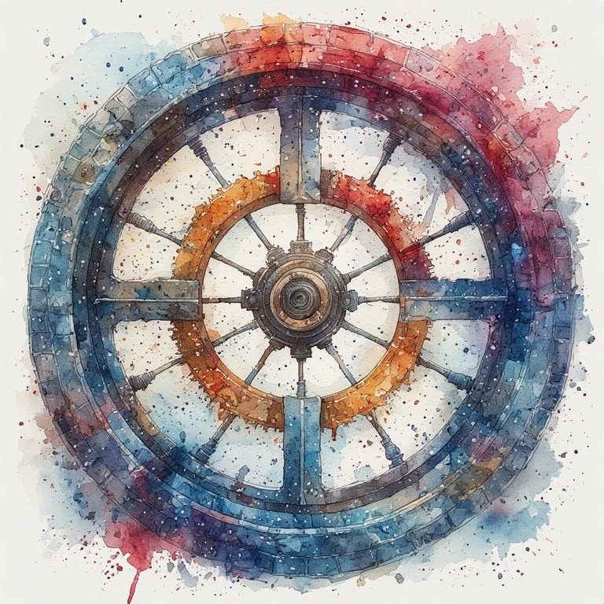

Part Six: The Cross
← Part Five: Intergenerational Witness · Radical Immanence Collection · Part Seven: Practices →
Before writing, before organized religion, human beings across every culture were making the same mark: two lines crossing. Petroglyphs. Cave walls. Pottery. Woven cloth. The cross is probably the oldest human symbol there is.
This is not coincidence. The cross is the simplest possible mark that shows two dimensions at once. It requires no more than two strokes and communicates: there is a horizontal, there is a vertical, and there is a place where they meet.
That place is where you are.
The Arms
The horizontal arm is your life in the present moment. Your relationships. Your identity spread wide. The ordinary Wednesday. The cup of tea. The grief without a name. Everything that Here Is Enough pointed to when it said: this is where your life is located.
The vertical arm is the transmission line. Running down into the sediment of everything that made this moment possible. Running up into the ground you are forming for the people who come after. It does not point toward God or heaven. It points down as much as up. It is not a transcendence line. It is a transmission line.
The center is the crossing point. It is where both arms are felt simultaneously. Where the present moment is met with full attention and also understood as resting on everything that came before and forming everything that comes after.

The Axis That Holds
The medieval wheel of fortune has a center. The wheel turns. The center does not turn. Whatever is at the center, at the axis, holds while the rim rises and falls.
The crossing point is the axis. When the horizontal axis is stripped by loss, rotation, illness, dissolution, the crossing point remains. Not as comfort, necessarily. As orientation. As the felt sense of being on a transmission line that continues regardless of the present configuration of circumstances.
This is what Boethius found in his cell. Not peace, exactly. Not resolution. A different axis. One that the wheel could not reach.
| Two lines crossing. That is the whole mark. The horizontal arm is your life right now. The vertical arm is everything that made you and everything you are making. The center, where they meet, is where you have always been. You are the crossing point. |
|---|
What does it feel like to be at the center rather than on the rim? What changes in how you experience the present moment when you feel the vertical axis as well as the horizontal?
Here Is Enough.
Cite this page: Russell, Coral. “Part Six: The Cross.” The Marguerite Young Society, updated October 29, 2026. https://marguerite-young-society.coralrussellbooks.workers.dev/collection-04-07-part-six-the-cross